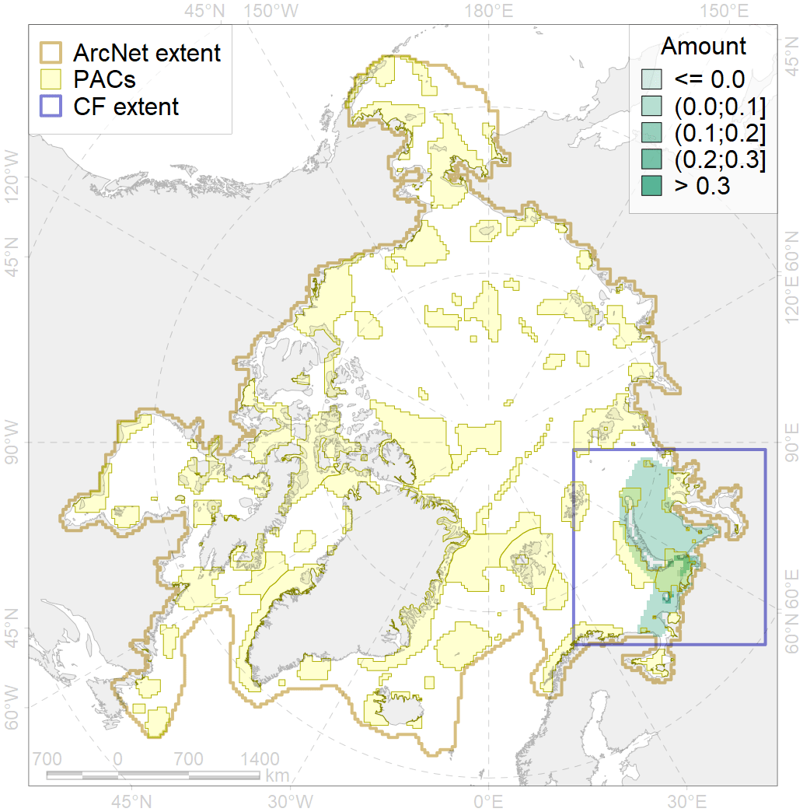
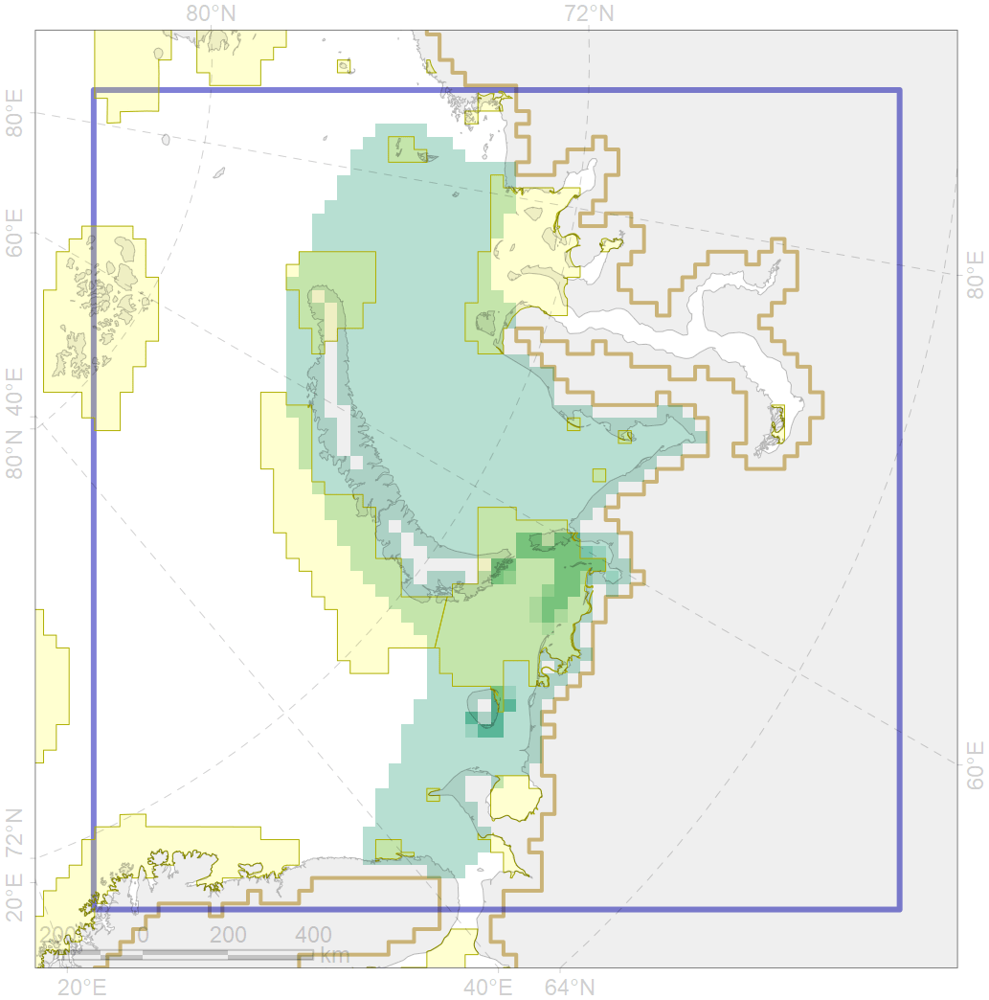

1009

| CF ID | 1009 |
| CF Name | Atlantic Walrus Summer Distribution in Pechora and Kara region |
| Time Period | last update - June 2018 |
| Source(s) | https://nammco.no/topics/atlantic-walrus/#1478699758629-7da126c3-48a6 |
| Seasonality | June-September |
| Depth Horizon | 0-200m |
| Methodology | Compilation of all available reports+experts opinion |
| Author Name | Maria Solovyeva |
| Notes | |
| Conservation Target Set in the Scenario | 0.336 |
| Conservation Target Achieved in the Scenario | 0.798 (Scenario: 237.6%) |
| PAC ID | Proportion in the PAC | Contribution to ArcNet Target Achievement | PAC’s Contribution to the Achieved Target |
|---|---|---|---|
| 15 | 0.0% | 0.0% | 0.0% |
| 16 | 0.1% | 0.2% | 0.1% |
| 18 | 0.0% | 0.0% | 0.0% |
| 19 | 0.1% | 0.3% | 0.1% |
| 20 | 83.6% | 234.4% | 98.7% |
| 21 | 0.1% | 0.3% | 0.1% |
| 23 | 0.0% | 0.0% | 0.0% |
| 24 | 0.0% | 0.0% | 0.0% |
| 25 | 0.0% | 0.0% | 0.0% |
| inner | 83.8% | 235.1% | 99.0% |
| outer | 16.2% | 2.4% | 1.0% |